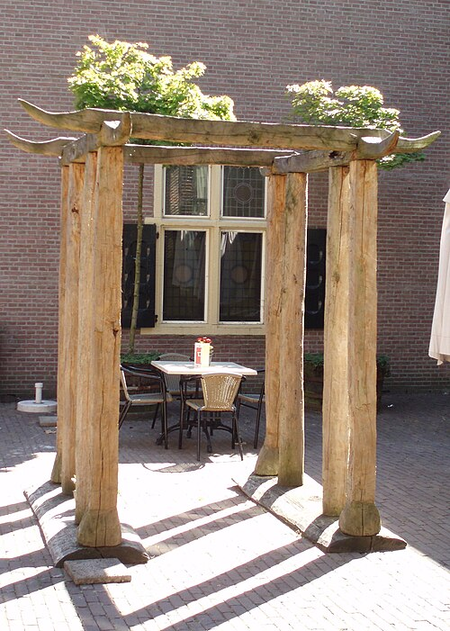

Het tempeltje van Barger-Oosterveld.
Hier zie je een replica van het tempeltje van Barger-Oosterveld. Het stond hier rond 1250 voor Christus, midden in het hoogveen. Zulke gebouwtjes zijn zeldzaam in Europa. Het tempeltje was twee bij twee meter groot. Het bestond uit acht eikenhouten palen op brede planken. Bovenop lagen balken met hoornvormige uiteinden. Hoorns waren een belangrijk symbool. Ze werden verbonden met vruchtbaarheid, maar kunnen ook verwijzen naar koeien, die in het veen werden geofferd. In het midden lag waarschijnlijk een plank voor offers. Het tempeltje is later bewust afgebroken en een stuk is teruggevonden in het veen. Dat wijst op een belangrijke rituele functie.